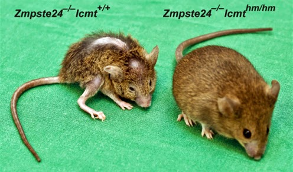

Une maladie mortelle
 Pendant longtemps il faut savoir que l'origine de la progeria était une egnime pour tous. Toutes les etudes étaient dirigées sur des hormones qu'on pensait etre a l'origine de maladie or, celles-ci n'étaient pas la cause de la maladie. C'est seulement en 2003 que dans l'unité 910 de l'INSERM dirigé par Nicolas Lévy où j'ai aféctué mon stage on découvre l'origine de la maladie. C'est la mutation du gene LMNA qui est a l'origine de 90% des cas. Le gène codant normalement pour des proteines lamines A et C, mais lorsque la mutation survient ce gène produit une protéine tronquée : la progérine. Cette progérine reste encrée dans la membrane du noyau des cellules et entraine donc sa formation et dysfonctions. L'origine de cette maladie est donc connu depuis très peu de temps : depuis 15 ans, ce qui à l'echel scientifique d'aujourd'hui este une découverte très récente. Pour trouver un traitement on peut dire qu'il est encore trop tôt.
{kind=link}
La progeria ne connait donc pas des avancées de recherches très rapides, faute de moyens. Aujourd’hui, aucun taitement n’a été mis au point.
Un espoir
L’ équipe dirigée par Nicolas Lévy, toujours a l'UMR S 910 d’Aix-Marseille, vient d’identifier le mécanisme lié à l’accumulation de la progérine, cette protéine toxique produite au cours de cette pathologie.  Depuis l'indentification du gène par cette même equipe il y a 15 ans, ces chercheurs ont envisagé de reduire la toxcicité de la progérine.
Il faut savoir que cet essai est extrenement long, ils ont commencé en 2018 auprès de 12 enfants cependant les résultats du possible ralentissement du vieillissement seront visible pour cette année.
De plus, cette même équipe met en avant le potentiel effet thérapeutique d'une nouvelle molécule. Cette molécule dite MG132 possède la capacité de reduire la production de progérine mais surtout de la degrader. C'est le deuxieme essai qui à été fait sur des cellules in vitro d'enfants et de souris. L'essai chez l'animal vivant est prevu pour 2019.
Depuis l'indentification du gène par cette même equipe il y a 15 ans, ces chercheurs ont envisagé de reduire la toxcicité de la progérine.
Il faut savoir que cet essai est extrenement long, ils ont commencé en 2018 auprès de 12 enfants cependant les résultats du possible ralentissement du vieillissement seront visible pour cette année.
De plus, cette même équipe met en avant le potentiel effet thérapeutique d'une nouvelle molécule. Cette molécule dite MG132 possède la capacité de reduire la production de progérine mais surtout de la degrader. C'est le deuxieme essai qui à été fait sur des cellules in vitro d'enfants et de souris. L'essai chez l'animal vivant est prevu pour 2019.
{kind=link}
{kind=link}